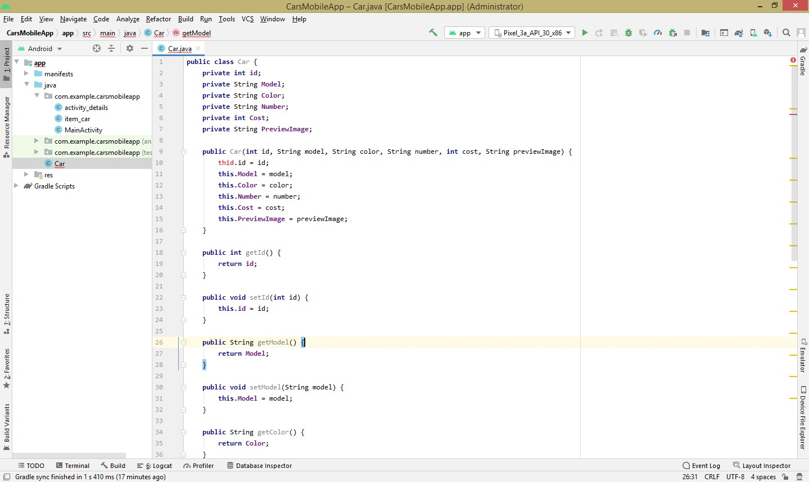
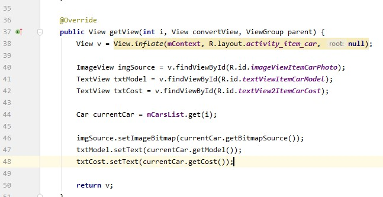
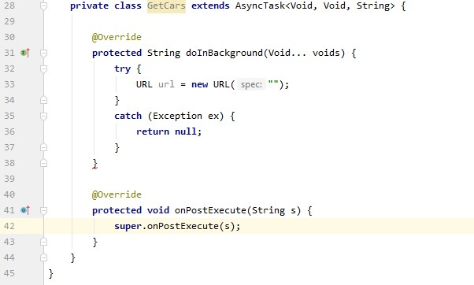

Популярность мобильных приложений и их влияние постоянно растет. Например, каким бы популярным ни был банк, обслуживающий платежные карты, в наше время он будет значительно проигрывать тому, который взял на вооружение мобильное приложение. В связи с этим постепенно возрастает число компаний, понимающих важность и ценность приложений для смартфонов. Именно поэтому мобильные приложения стали неотъемлемой частью при разработке программных решений.
Для разработки мобильных приложений под андроид мы рассмотрим две среды разработки. Одна из них — Android Studio, позволяющая писать нативные приложения
1. Создаем новый проект:
- Выбираем стандартный шаблон
- Указываем название и выбираем язык для разработки. В этом примере будет показана разработка на языке Java
2. Для начала займемся дизайном приложения. Сверстаем activity для главной страницы, для дополнительной информации и одного объекта — автомобиля, который будет отображаться в списке.
3. Добавляем новую activity для детальной информации. Элемент списка, как и страница с детальной информацией, будет состоять из трех элементов: изображение, модель автомобиля и стоимость его аренды
4. Создаем класс Hotel для работы с API:
- Нам нужно создать поля для этого класса в соответствии с тем, что планируем использовать в приложении
- Попробуем получить ответ и в соответствии с этими полями отразить это в нашем классе
- Создаем конструктор и методы для установки и получения значений

- Затем для передачи данных о классе реализуем интерфейс Parcelable и его методы
- Кроме того, необходимо добавить метод для преобразования полученных данных в изображении
5. После того, как мы создали класс для работы, необходимо создать для него адаптер. Он позволит связывать данные с элементами управления.
- Для этого создаем новый класс CarsAdapter, который унаследуем от BaseAdapter, реализовав необходимые методы
- Создаем поля, которые потом добавляем для инициализации в конструктор (Context и список автомобилей mCarsList).
- С помощью сочетания Alt + Insert добавляем конструктор
- После объявления этих полей немного переписываем методы из BaseAdapter под свои нужды:
- GetCount будет возвращать количество элементов в списке
- GetItem будет возвращать сам объект
- GetItemId — код выбранного элемента
- GetView — само представление об элементе в списке
- Метод GetView показывает загрузку представления каждого элемента. Сначала мы указываем, какой ресурс для отображения будем использовать, а затем находим элементы управления и устанавливаем значения
- Получаем объект, который выбрали для этого View. Устанавливаем значения

6. Так как в списке будет отображаться только самая общая информация, пользователю может быть интересно узнать детали по каждому элементу в списке. Для этого мы обрабатываем нажатие на элемент в списке. Но сначала определим, каким образом осуществляется навигация в приложении. В Android необходимо создать переменную, которая описывает правила и параметры для вызова новой активности. Обратите внимание, по нажатию на элемент мы будем переходить на другую страницу с информацией. Для этого нужно обработать это нажатие и прописать логику перехода. Делать это мы будем в нашем View внутри адаптера.
- Устанавливаем слушателя на Click, и между намерениями, прежде чем вызвать его, передаем экземпляр нашего объекта
- В MainActivity создаем экземпляр для адаптера из списков. ListView можно создать в методе OnCreate и установить для него адаптер

- Создаем экземпляр адаптера
7. Ранее мы создали и развернули API, который позволяет нам работать с единой базой данных с разных устройств. Давайте выведем в мобильном приложении список отелей. Но сначала эти данные необходимо получить
- Создаем новый класс, унаследованный от AsyncTask, который будет отвечать за получение и загрузку данных
- Мы реализуем два метода:
- DoingBackground, будет отвечать за загрузку данных
- onPostExecute — за их обработу

- Для обращения к локальному API мы будем переходить по адресу не 127.0.0.1, а 10.0.2.2 — стандартный для Android
- Соответственно переходим к обработке данных
- Добавляем созданный объект в список и обновляем адаптер

- Вызываем выполнение этого метода при запуске MainActivity
- Обратите внимание, чтобы работать с интернетом, вам необходимо прописать разрешение на подключение в manifest
8. Попробуем запустить приложение на эмуляторе:
- Для этого создаем новый эмулятор
- Запускаем приложение и проверяем результат.
Итоги
Мы рассмотрели очень важные функции в мобильном приложении: получение данных с помощью API, вывод информации в список, просмотр детальной информации. Это далеко не все, что вам предстоит узнать в мобильной разработке, но уже хорошая основа для последующего изучения.